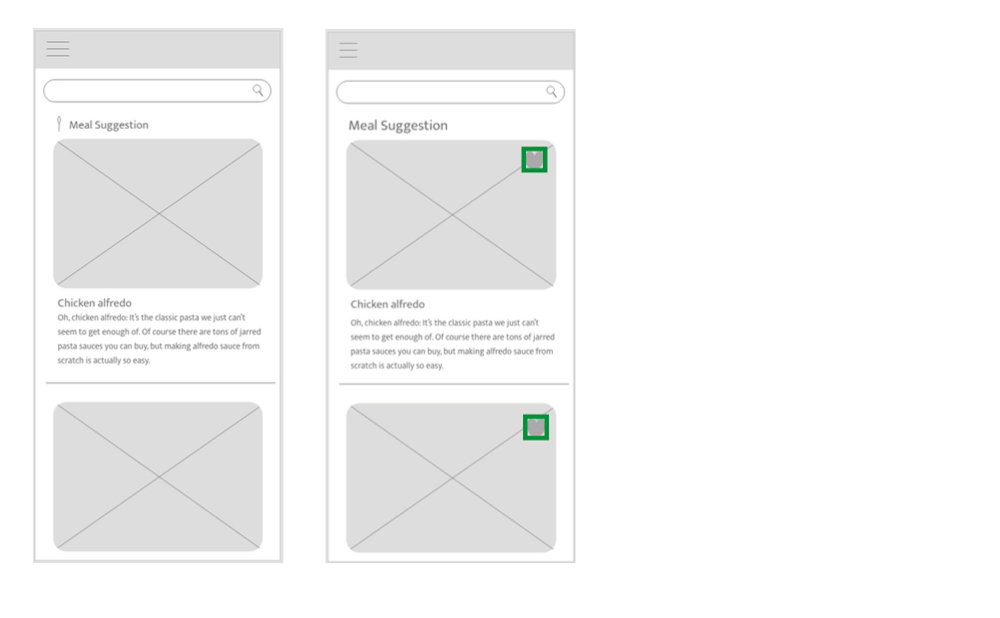
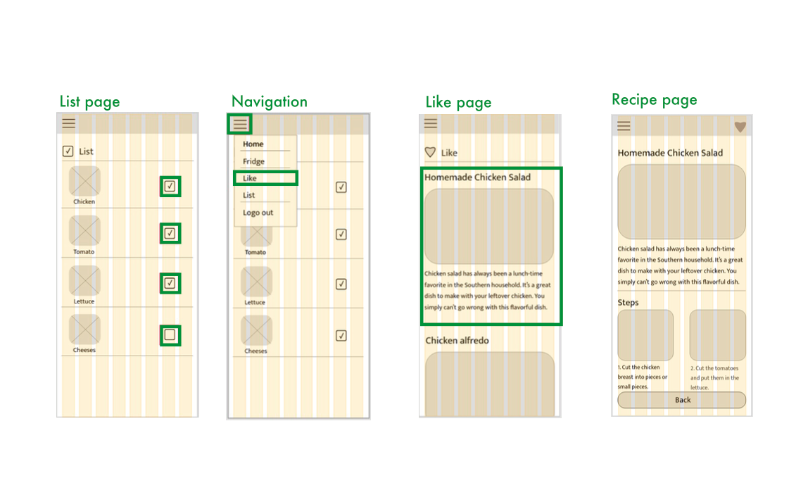
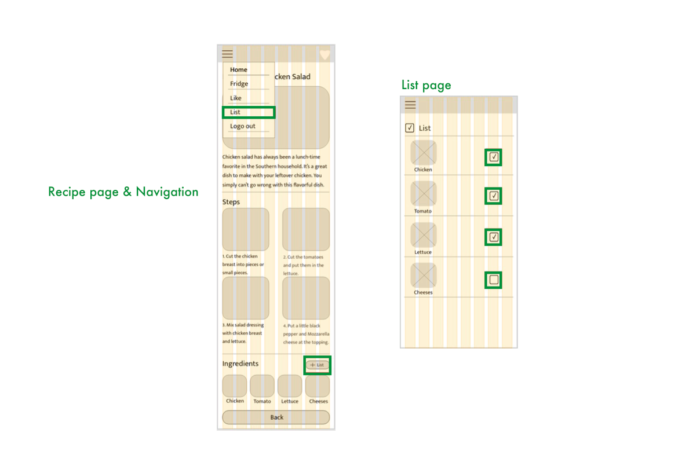

Research Plan
Background
In modern society,people have very limited timeand fewer and fewer young people
cook
by themselves. Fast food restaurants and frozen meals have become popular. Even the“healthy”
food
with many additives,but just lower calories have bad health effects.I hope that through an
apppeople
will find easier way to cook and discover the joy of cooking,also the food we takin will be
healthier.
Goals
The purpose of these user interviews is to understand how heavily people related in self-cooking
app
with learning or making change for health living.
Research Questions:
- Why do people start to think about cook?
- Why do people refuse self-cook?
- How often do people cook?
- What is the problem do people find when they try cooking?
- How do people use or interpret a recipe when they choose to cook?
User Interview Response
In Conclusion:
60% of people would cook if they could have a solid recipe or make it easy.
75% of people care about their eating habits and health.
Single people prefer to cook on weekdays.
People with families often cook with them on weekend.
75% of people care about their eating habits and health.
Single people prefer to cook on weekdays.
People with families often cook with them on weekend.
Feature Matrix
Heuristic Evaluation – Eat Now
Help users recognize, diagnose, and recover from errors
I didnʼt found any errors during using. Itʼs slow when logging in, it requires the
app
ID, and an error and prompt appear. .
User control and freedom
Users can easily use search and selection, and add recipes to favorite pages. But
user
cannot add any recipe or change anything for page settings.
Error prevention
One of the confusing things is that the shopping button on the homepage should be
the
shopping list.

Persona 1
Frustrations
Having no time in cooking because of there's no clear diet plan. Jack eats out
every
day,which is costly and unhealthy.
Needs/Goals
It is unhealthy and not a long term lifestyle.He sometimes bought some
ingredients,
but he didn't know how to cook, so he gave up.He has to make a change.
Cooking skill
Not good at cooking. He doesn't always cook at home, and He often makes food with
a
Microwave Oven.
About
Tom usually gets off work at 7 8pm because he always works overtime. He usually
orders
take out with colleagues for lunch and buys dinner near his home.
Persona 2
Frustrations
She feel she wastes too much time preparing.it's hard to find dishes to cook.
Needs/Goals
35% Cook good food for family on weekdays.She hope to make cooking easier and make
good food in less time at weekdays.
Cooking skill
She often cooks home-style food,and her cooking skills and experience are good.
About
50% keep healthy eating, But ot everyday.She always remind
herself eating healthy food. She hpe to make me and my family healthier, especially the
children.
Persona 3
Frustrations
He usually buy fresh ingredients in the supermarket,but some recipe is
complicated,buying ingredients will be annoying
Needs/Goals
He has plenty of time to cook. he hope he can improve his cooking skills by the
tool.And share the dishes with his family and friends.
Cooking skill
Great. I have been cooking by myself for more than a year, and I always check
information about cooking.
About
80% cook by himself.Focus on healthy diet,cook and take out for weekdays. Don't
like
go out for eating. He was sick because of his eating habits before.
Brainstorming
Task Content &Follow
Jack's problem:
He bought some ingredients,but he didn't know how to cook.He wants to find easy
recipes with these ingredients.
Task 1:
Jack checked the refrigerator,there was chicken and tomatoes.He opened app and add
chicken and tomato to Fridge page.He back to home page with a great recipe with these
ingredients,then follow the recipe step by step Finally, dinner is ready.
Anna's problem:
She feel she wastes too much time preparing. it's hard to find dishes to cook.
Task 2:
Anna opened app and she found a great recipe that she wanted to cook with her
family
on this weekend. She clicked to Like and Add List on Recipe page,then went to the supermarket to
buyingredients on List. She backed home, opened the app,- clicked Likefound the recipe she
clicked
Like before,and follow the recipe step by step.
Jody's problem:
He usually buy fresh ingredients in the supermarketbut some recipe is
complicated,buying ingredients is annoying.
Task 3:
Alice opened the app, searched the dishes she already know how to cook.She find
the
dishes and click to Add List on the recipe page.Then checked app List and went to the
supermarket to
buy ingredients,she checked every ingredient on List page when she shopping.
Task Map
Pages to Design:
Task 1.Home Select Menu> Fridge> Home Select Menu>Recipe Page>Home
Select
Menu
Task 2.Home Select Menu>Recipe Page>List>Like> Recipe Page> Home
Select
Menu
Task 3.Home Select Menu>Recipe Page>List>Home Select Menu
Task 1
Task 1 Page Follow:
Home Select Menu> Fridge> Home Select Menu> Recipe Page>Home Select Menu
Task 2
Task 2 Page Follow:
Home Select Menu>Recipe Page>List>Like> Recipe Page> Home Select Menu

Task 3
Task 3 Page Follow:
Home Select Menu>Recipe Page>List> Home Select Menu
Paper Prototype Testing & Results
Task 1 Modify
Home Select Menu> Fridge> Home Select Menu>Recipe Page>Home Select Menu
Testers Said
“Ithink there should be button on the fridge page that can delete each
ingredient.”
“There should be an input method on the fridge page when search to find the ingredi ents name.”
Fridge Page
On the fridge page, add ingredient to add an input method. In the already added
ingredient, add a delete button in the upper left corner of the picture.
In this way,the fridge page will be more fluent and convenient when use.
Task 2 Modify
Home Select Menu>Recipe Page>List>Like> Recipe Page> Home Select Menu
Testers Said
“Ithink the like and add list buttons on the recipe page are not obvious and
should be placed in a more convenient location.”
“I think the recipe page should also havenavigation. This makes it easy to switch pages at any
time.”
“I think the lpad version should be set up.Using phone when going out,but lpad will be more
convenient when cooking.”
Recipe Page
I reset the “Like” button on the recipe page to the right of the navigation.
And Back button on the bottom of the page. This is always on the top and user can be clicked at
any time.
Task 3 Modify
Home Select Menu>Recipe Page>List>Home Select Menu
Testers Said
“I like this list page very much,I think it is very useful for me when shopping.”
Like Page
I put the like buttons next to each menu on the homepage.
This makes it convenient for users to preview first, and then leave the final menu after
comparing on the like page.

Medium Fidelity Wireframes
App Design Guide
8 column,width:39px/each Gutter size: 12px
Margins: 16px each side
Task 1
Home Select Menu> Fridge> Home Select Menu>Recipe Page>Home Select Menu
Task 2
Home Select Menu>Recipe Page>List>Like> Recipe Page> Home Select Menu

Task 3
Home Select Menu>Recipe Page>List>Home Select Menu

Mood Board
Ul Style Guide
Mockup